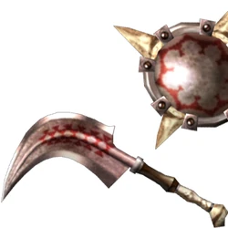
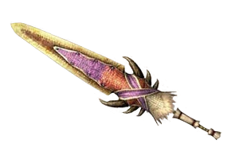
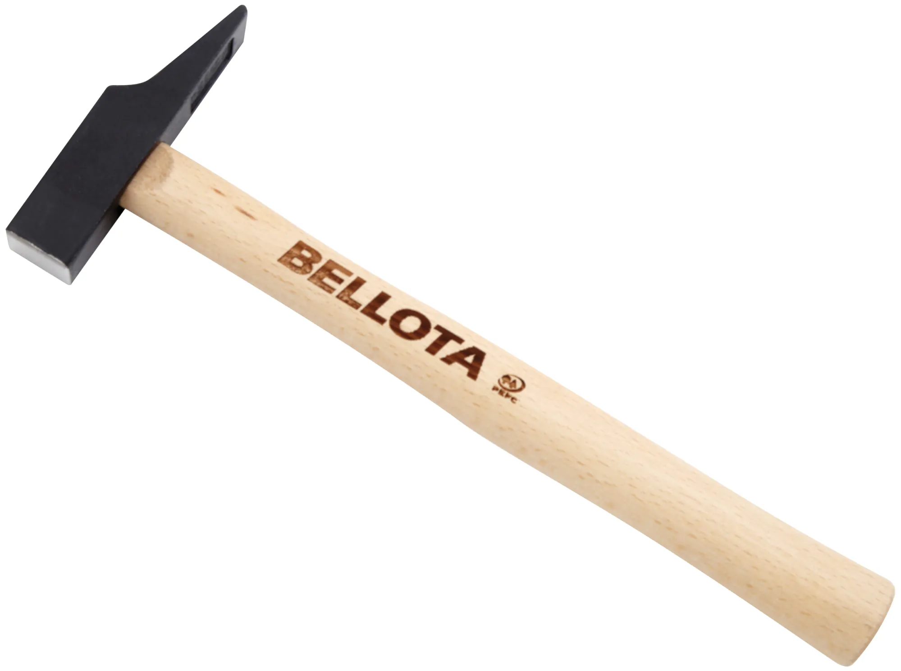
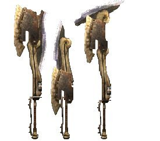
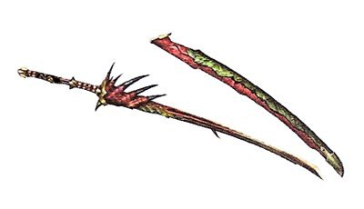
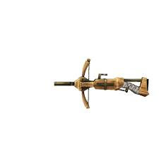

DEV
Tipos de armas
En un bosque muy lejano, habitaba una criatura mágica cuyo poder era temido y venerado por todos los seres que habitaban sus alrededores. Esta criatura, conocida como el Guardián del Bosque, velaba por la armonía y el equilibrio de la naturaleza, protegiendo a los inocentes y castigando a los malvados. Desde tiempos inmemoriales, la humanidad ha buscado respuestas en las estrellas, tratando de descifrar los secretos del universo y comprender su lugar en el cosmos. Los astrónomos, filósofos y soñadores de todas las épocas han contemplado el firmamento con asombro y admiración, buscando la verdad que se esconde en la inmensidad del espacio.
Indice
|  |  |  | |
| Espada y escudo | Lanza | Gran Espada | Martillo |
|---|---|---|---|
|  |  |  | |
| Hacha Espada | Espada Larga | Ballesta Ligera | Ballesta Pesada |
Espada y escudo
En un lugar de la Mancha, de cuyo nombre no quiero acordarme, no ha mucho tiempo que vivía un hidalgo de los de lanza en astillero, adarga antigua, rocín flaco y galgo corredor. Hace muchos años, en un país lejano, se promulgó una ley que cambiaría el destino de su gente para siempre. Había una vez en un reino mágico, un príncipe valiente y una princesa de belleza sin igual cuyo amor desafió todas las adversidades. Era el mejor de los tiempos, era el peor de los tiempos, la edad de la sabiduría y también de la locura. En un agujero en el suelo, vivía un hobbit, y no precisamente un agujero húmedo, sucio, repugnante, con restos de gusanos y olor a fango, ni tampoco un agujero seco, desnudo y arenoso, sin nada en que sentarse ni que comer: era un agujero-hobbit, y eso significa comodidad.
Lanza
En un lugar de la Mancha, de cuyo nombre no quiero acordarme, no ha mucho tiempo que vivía un hidalgo de los de lanza en astillero, adarga antigua, rocín flaco y galgo corredor. Hace muchos años, en un país lejano, se promulgó una ley que cambiaría el destino de su gente para siempre. Había una vez en un reino mágico, un príncipe valiente y una princesa de belleza sin igual cuyo amor desafió todas las adversidades. Era el mejor de los tiempos, era el peor de los tiempos, la edad de la sabiduría y también de la locura. En un agujero en el suelo, vivía un hobbit, y no precisamente un agujero húmedo, sucio, repugnante, con restos de gusanos y olor a fango, ni tampoco un agujero seco, desnudo y arenoso, sin nada en que sentarse ni que comer: era un agujero-hobbit, y eso significa comodidad.
Gran Espada
En un lugar de la Mancha, de cuyo nombre no quiero acordarme, no ha mucho tiempo que vivía un hidalgo de los de lanza en astillero, adarga antigua, rocín flaco y galgo corredor. Hace muchos años, en un país lejano, se promulgó una ley que cambiaría el destino de su gente para siempre. Había una vez en un reino mágico, un príncipe valiente y una princesa de belleza sin igual cuyo amor desafió todas las adversidades. Era el mejor de los tiempos, era el peor de los tiempos, la edad de la sabiduría y también de la locura. En un agujero en el suelo, vivía un hobbit, y no precisamente un agujero húmedo, sucio, repugnante, con restos de gusanos y olor a fango, ni tampoco un agujero seco, desnudo y arenoso, sin nada en que sentarse ni que comer: era un agujero-hobbit, y eso significa comodidad.
Martillo
En un lugar de la Mancha, de cuyo nombre no quiero acordarme, no ha mucho tiempo que vivía un hidalgo de los de lanza en astillero, adarga antigua, rocín flaco y galgo corredor. Hace muchos años, en un país lejano, se promulgó una ley que cambiaría el destino de su gente para siempre. Había una vez en un reino mágico, un príncipe valiente y una princesa de belleza sin igual cuyo amor desafió todas las adversidades. Era el mejor de los tiempos, era el peor de los tiempos, la edad de la sabiduría y también de la locura. En un agujero en el suelo, vivía un hobbit, y no precisamente un agujero húmedo, sucio, repugnante, con restos de gusanos y olor a fango, ni tampoco un agujero seco, desnudo y arenoso, sin nada en que sentarse ni que comer: era un agujero-hobbit, y eso significa comodidad.
Hacha Espada
En un lugar de la Mancha, de cuyo nombre no quiero acordarme, no ha mucho tiempo que vivía un hidalgo de los de lanza en astillero, adarga antigua, rocín flaco y galgo corredor. Hace muchos años, en un país lejano, se promulgó una ley que cambiaría el destino de su gente para siempre. Había una vez en un reino mágico, un príncipe valiente y una princesa de belleza sin igual cuyo amor desafió todas las adversidades. Era el mejor de los tiempos, era el peor de los tiempos, la edad de la sabiduría y también de la locura. En un agujero en el suelo, vivía un hobbit, y no precisamente un agujero húmedo, sucio, repugnante, con restos de gusanos y olor a fango, ni tampoco un agujero seco, desnudo y arenoso, sin nada en que sentarse ni que comer: era un agujero-hobbit, y eso significa comodidad.
Espada Larga
En un lugar de la Mancha, de cuyo nombre no quiero acordarme, no ha mucho tiempo que vivía un hidalgo de los de lanza en astillero, adarga antigua, rocín flaco y galgo corredor. Hace muchos años, en un país lejano, se promulgó una ley que cambiaría el destino de su gente para siempre. Había una vez en un reino mágico, un príncipe valiente y una princesa de belleza sin igual cuyo amor desafió todas las adversidades. Era el mejor de los tiempos, era el peor de los tiempos, la edad de la sabiduría y también de la locura. En un agujero en el suelo, vivía un hobbit, y no precisamente un agujero húmedo, sucio, repugnante, con restos de gusanos y olor a fango, ni tampoco un agujero seco, desnudo y arenoso, sin nada en que sentarse ni que comer: era un agujero-hobbit, y eso significa comodidad.
Ballesta ligera
En un lugar de la Mancha, de cuyo nombre no quiero acordarme, no ha mucho tiempo que vivía un hidalgo de los de lanza en astillero, adarga antigua, rocín flaco y galgo corredor. Hace muchos años, en un país lejano, se promulgó una ley que cambiaría el destino de su gente para siempre. Había una vez en un reino mágico, un príncipe valiente y una princesa de belleza sin igual cuyo amor desafió todas las adversidades. Era el mejor de los tiempos, era el peor de los tiempos, la edad de la sabiduría y también de la locura. En un agujero en el suelo, vivía un hobbit, y no precisamente un agujero húmedo, sucio, repugnante, con restos de gusanos y olor a fango, ni tampoco un agujero seco, desnudo y arenoso, sin nada en que sentarse ni que comer: era un agujero-hobbit, y eso significa comodidad.
Ballesta pesada
En un lugar de la Mancha, de cuyo nombre no quiero acordarme, no ha mucho tiempo que vivía un hidalgo de los de lanza en astillero, adarga antigua, rocín flaco y galgo corredor. Hace muchos años, en un país lejano, se promulgó una ley que cambiaría el destino de su gente para siempre. Había una vez en un reino mágico, un príncipe valiente y una princesa de belleza sin igual cuyo amor desafió todas las adversidades. Era el mejor de los tiempos, era el peor de los tiempos, la edad de la sabiduría y también de la locura. En un agujero en el suelo, vivía un hobbit, y no precisamente un agujero húmedo, sucio, repugnante, con restos de gusanos y olor a fango, ni tampoco un agujero seco, desnudo y arenoso, sin nada en que sentarse ni que comer: era un agujero-hobbit, y eso significa comodidad.
DEV
- Encuesta de satisfaccion
- Siguenos en nuestras redes sociales:
-